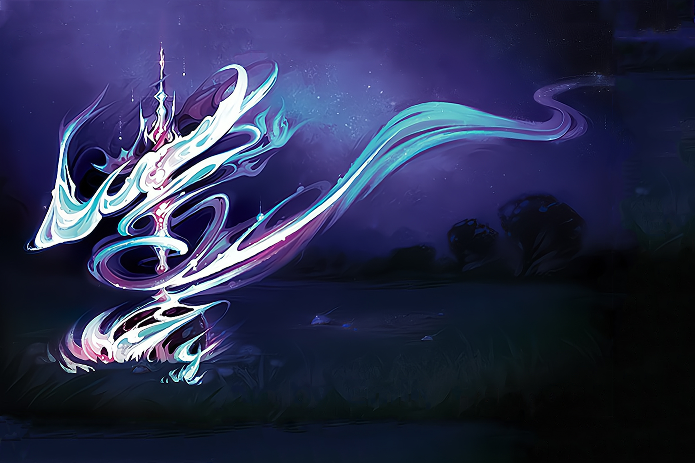

Starlight Seeks Its Form
Every once and again, where starlight falls to ground there arises a new Spirit. Its essence is initially that of the stars and nighttime sky, but from the moment it touches the island it begins to change, adapting and reimagining itself for its new home. Only a few of the island's Spirits came to be in this fashion, but many of them have been memorable.
This one arrived after the Invaders started to spread, striking the earth where they had cleared land for farming. Fragile and new, it was saved from dissolution by Stone's Unyielding Defiance, and in gratitude fights the Invaders even as it seeks to define itself.
SETUP:
Put 1 {presence} on your starting board, in a land with {blight}.
Play Style:
A build-your-own-Spirit, capable of going in many different directions based on Elements picked, Growth choices selected, and Power Cards kept. Has a very high personal/visual complexity and a huge number of early-game options, but doesn't alter play much for other players at the table.
As it commits to choices, it loses versatility - not all paths will be good (or even possible) at all things. It especially wants a measure of adaptation to early Power Cards, rather than trying to pre-select a strategy.
COMPLEXITY
Very High
|
Summary of Powers
|
|
|
|
|
|
|
OFFENSE
|
CONTROL
|
FEAR
|
DEFENSE
|
UTILITY
|